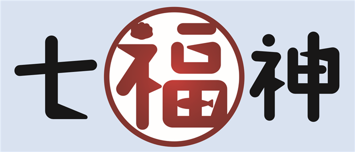
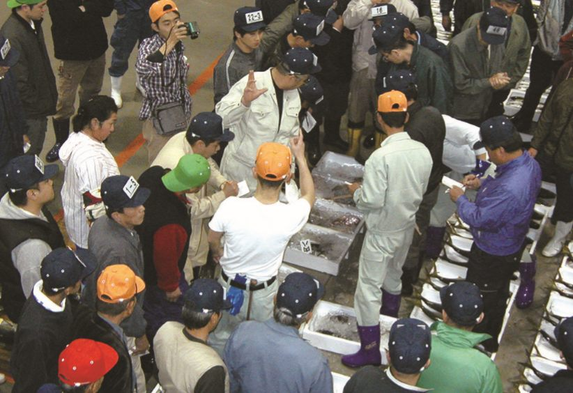

01
高機能・高品質で
高コストパフォーマンス
多くのお客様からご支持いただいている高機能・高品質でコストパフォーマンスの高いシステムです。
日本の漁業を未来へつなぐ
信頼と実績の卸売市場ソリューション
魚市場卸基幹業務システム「七福神」。産地集散市場と消費地市場のお客様にお使いいただいております。多様な業務機能を包括したトータルシステムとしてパッケージ化されています。

卸売市場ソリューション
多くのお客様からご支持いただいている高機能・高品質でコストパフォーマンスの高いシステムです。
お客様と共に課題に取り組み、長年のノウハウと技術を集結してきました。
導入実績が豊富で、ご要望に合わせた柔軟なカスタマイズが可能です。
サブシステムも充実しており最適なシステムをご提供します。
サブシステムの充実により様々な場所で投入されたデータを連携・共有・加工することにより、大切な資産を有効に活用することができます。
| A社様 | B社様 | |
|---|---|---|
| 従業員数 | 135人 | 124人 |
| 資本金 | 4億円 | 2億円 |
| 水揚金額 （取扱高） | 423億円 | 421億円 |
| 特徴 | 取扱いのうちカツオ・マグロ類のシェアは、数量で99％・金額で99％、また、冷凍魚のシェアは、数量で99％・金額で97％。 | 産地集散市場と消費地市場の両面の性格をもち、西日本における水産物流通の中核的拠点となっている。 |

お客様の課題に取り組みながら柔軟に対応し、ご要望に合わせて段階的システム導入が可能です。
また、無理なく計画的にシステムを導入・拡張することができます。
水産庁からの指導もあるように、地震や津波から大切なデータを守れる体制を求められています。
大きな地震や津波などの災害時は、お客様のバックアップだけでは大切なデータを守れません。そこで、VPN（バーチャル プライベート ネットワーク）という安全なネットワーク技術を利用し、「七福神」データをデータセンターへ格納します。
皆様からのお問い合わせにも迅速に対応し、安心と安全をお届けします。